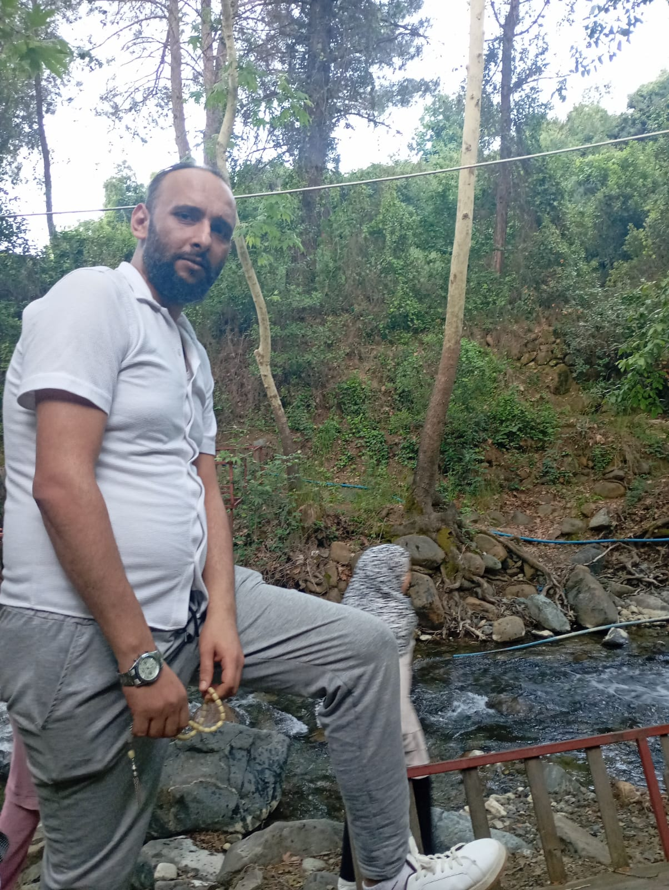

ذِكرٌ طيّب ودعاءٌ لا ينقطع
إِنَّا لِلَّهِ وَإِنَّا إِلَيْهِ رَاجِعُونَ
اللهم ارحم أحمد فايز الأحمد
اللهم اغفر له وارحمه، وعافه واعفُ عنه، وأكرم نزله، ووسّع مدخله، واجعل قبره روضةً من رياض الجنة، ونوّر له فيه، واجمعه بمن يحب في جنات النعيم.
اللهم اجعل هذا العمل بابَ خيرٍ ودعاءٍ يصل إليه، وتقبّله بواسع رحمتك.
تطوير MOOHAMEDوفاءً لخالي أحمد فايز الأحمد، رحمه الله وأسكنه فسيح جناته